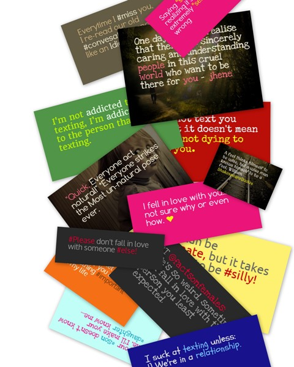

Introducing you to PrittyNote
PrittyNote |
With thoughts, comes design. |
|  |
PrittyNote Lets you turn your thoughts or any text from where ever who knows you have gotten from into cool look-a-like stickynote images that you can share to your friends, back in Twitter, Facebook, via Email and any other place that you'd want to share. It features a color picker that gives you a 1,000,000 choises in color customisation of the background, the text and mentions/hashtags. Over 25 Themes and 50 Font's to choose from, Image as background capability, also Twitter intergration to make prittynotes from tweets tweeted that you've liked.
|
© 2013. All Rights Reserved.